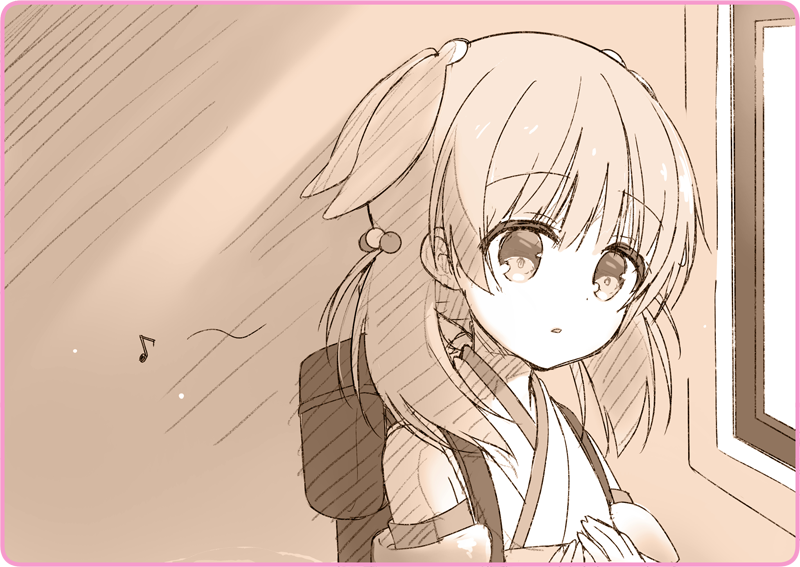

Khoảnh khắc tỉnh giấc, Lilia được bao bọc trong ánh sáng.
Một luồng sáng ấm áp. Sắc cam phản chiếu trên nền tuyết trắng, chói lóa như muốn thiêu đốt đôi mắt cô vậy.
Phải chăng cô đã lên thiên đàng rồi? Không, không thể có chuyện đó được. Lilia đã phạm biết bao nhiêu tội lỗi, mà tội nhân thì phải xuống địa ngục. Đó là điều mà cô đã được nghe tại Nhà thờ Thượng phụ không biết bao nhiêu lần từ hồi còn bé xíu. Cô không thể tới một chốn bình yên như thế này được…
Người phụ nữ trung niên: “Chào buổi sáng, cô bé.”
Một giọng nữ vang lên, hơi nặng song cũng có phần dịu êm. Nhìn xung quanh, cô bắt gặp một bác gái đứng tuổi với vóc người tương đối đầy đặn.
Người phụ nữ trung niên: “Thiệt tình, cô bé đúng là được trời thương mà.”
Có vẻ như Lilia đã ngủ trên chiếc giường này.
Lilia: “Cháu… tại sao lại…?”
Người phụ nữ trung niên: “Cháu không nhớ gì thật hả?”
Bác gái khoanh hai tay lại, và thở hắt ra thật mạnh.
Người phụ nữ trung niên: “Đám Hình nhân Cơ khí đã đưa cháu tới đây đấy.”
Lilia: “Dạ…?”
Người phụ nữ trung niên: “Với lại còn là loại sản xuất ở Hoàng Quốc nữa. Chẳng biết chúng nó đột nhập vào từ đâu. Sau đó thì chúng nó vội chạy đi đằng nào rồi ấy…”
Cô không tài nào hình dung ra nổi câu chuyện.
Đám Hình nhân Cơ khí? Đưa mình tới đây?
Người phụ nữ trung niên: “Cháu tính xâm nhập vào Altaria đấy à? Đúng thật là, đừng có làm liều chứ… không đến lúc bỏ mạng thì lại đổ tại số. Còn may là chỉ bị bắn vào chân thôi đấy… Bác sĩ mà đến muộn hơn tí nữa thì chẳng biết cháu thành ra cái gì rồi…”
Lilia: “C-Cho cháu hỏi… nơi này… rốt cuộc là…”
Người phụ nữ trung niên: “À, chớ lo. Chỗ này hoàn toàn là lãnh thổ Lobelia. Mà, băng qua khu rừng kia thì lại vào địa phận nước địch rồi…”
Lilia: “....... Aaa….”
Người phụ nữ trung niên: “Bác sẽ pha chút trà thảo mộc, chờ một xíu nhé.”
Bác ta nói vậy rồi rời đi.
Đương lúc Lilia trân mắt nhìn lên trần nhà, chợt cô ngửi được mùi hương ngọt ngào thoang thoảng đâu đây. Dần dà cô cảm thấy như các giác quan đang quay lại cơ thể mình.
Chính lúc đó, cô nhận ra đang có thứ gì nằm trong tay phải. Một vật rắn mà cô đã luôn nắm chặt lấy.
Lilia: “...... Đây là…”
Cô chầm chậm giơ tay lên trước mặt và mở nó ra.
Nằm gọn trong ấy là một đồng shilling.
Giọng nói ấy, được tái hiện sống động trong tâm trí cô.
Đến chừng nhận ra, thì khuôn mặt Lilia đã giàn giụa nước mắt rồi.
Lilia: “Haizakura…”
Cô ôm chặt đồng xu trước ngực.
Nó ấm áp làm sao, tựa như ngọn lửa sinh mệnh vậy.
Lilia: “Híc… Hức… Hu… Aaaaaaaaaaaa….”
Hàng lệ thi nhau chảy mãi không ngừng.
＊ ＊ ＊
Người lính: “Lối này, thưa tiến sĩ Tohma.”
Theo sau chàng lính, tôi rảo bước trên một lối mòn xám tro chật hẹp. Đã gọi là đồn lũy nơi biên giới, ta dễ nghĩ ngay tới những con đường rối rắm đến độ không có người dẫn thì lạc là cái chắc.
Nagi: “Xin lỗi, nhưng cậu vui lòng đừng gọi tôi là tiến sĩ, được chứ?”
Người lính: “Dạ?”
Nagi: “Như thế dễ nhầm với ông tôi lắm.”
Nghĩ rằng chắc tới đây là được rồi, tôi cởi chiếc mũ nhà binh xuống. Tóc mái của tôi khẽ đung đưa. Gì mà giữ gìn tác phong sinh hoạt trong quân đội… Giả mà đụng phải mấy ông sĩ quan hăng máu thì mới phiền, chứ đã ở đây rồi thì có lẽ chẳng sao đâu.
Người lính: “Nhưng mà, gọi ngài bằng cách khác… Đại úy Kỹ thuật thì sao ạ?”
Nagi: “Nagi-san là được rồi. Tôi chỉ là một người thợ chế tạo Hình nhân được thuê vào thôi mà.”
Người lính: “Không, nhưng mà, chuyện như vậy…”
Vừa đi vừa trêu chọc cậu lính như vậy, cuối cùng tôi cũng tới được một nhà giam nhỏ.
Có một Hình nhân đang ngồi yên lặng trong đó. Mái tóc màu anh đào, đôi mắt màu lưu ly. Em dáo dác nhìn xung quanh với vẻ hoang mang…
Nagi: “Chào, tôi đến đón em đây.”
Nagi: “Chắc em thấy cô đơn lắm nhỉ.”
Nhận ra tôi, khuôn mặt em chợt bừng sáng. Em nhảy lóc cóc tới bên tôi.
Nagi: “Hình nhân thực nghiệm của tôi đã gây rắc rối cho mọi người rồi.”
Người lính: “À không, là chúng tôi may mắn đã tìm ra cô ấy sớm. Ai mà biết được lảng vảng gần biên giới sẽ phát sinh ra chuyện gì.”
Nagi: “... Tôi nghe nói, gần đây cũng có một toán Hình nhân Cơ khí bị mất kiểm soát đúng không?”
Người lính: “À vâng, đúng là vậy. Vừa lúc chúng tôi tìm thấy Hình nhân thực nghiệm này thì bọn chúng không còn nhận được mệnh lệnh nữa… Chúng đã biến mất đâu khoảng hai ngày ạ.”
Nagi: “Các cậu đã tìm ra chúng vô sự rồi chứ?”
Người lính: “Chúng tôi tìm thấy chúng ở gần lãnh thổ Lobelia. Theo lời các kỹ sư thì có khả năng vẫn còn tồn đọng một số mệnh lệnh chưa hủy hay gì đó…”
Nagi: “Để lát nữa tôi kiểm tra. Cấp trên của cậu… ờ, là ai ấy nhỉ? Thôi thì, báo cáo cho người ấy giùm tôi được chứ?”
Người lính: “Tuân lệnh!”
Anh lính khép hai chân lại và kính lễ.
Nagi: “Rồi, mình đi thôi.”
Nhẹ nhàng đẩy lưng cô bé, tôi và em cùng rời khỏi phòng giam.
＊ ＊ ＊
Nagi: “Tôi nghe nói cô bé Hình nhân bị ăn cắp khỏi đoàn ca kịch nữ đã được thu hồi bình an. Thời nay loại Hình nhân đó cũng khá hiếm mà. Nếu ngày nào đó đoàn kịch mở cửa trở lại, tôi muốn được nghe giọng hát đó một lần nữa…”
Đằng sau tôi một chút, Haizakura đang khẽ khàng đặt từng bước chân.
Chẳng rõ cô bé có đang nghe không. Chắc là do hiếm khi được vào đồn lũy nên ánh mắt em đang đảo hết chỗ này sang chỗ khác.
Nagi: “Haizakura.”
Nagi: “Em là người điều khiển đám Hình nhân Cơ khí đó phải không?”
Nagi: “Em đã chiếm quyền chỉ huy… và điều khiển chúng phải không?”
Tựa hồ vừa được khai thông, em vỗ tay một cái.
“Không được tự ý điều khiển Hình nhân Cơ khí của Hoàng Quân đâu đấy. Làm thế sẽ để lại nhật trình… sau này xóa đi sẽ khó lắm.”
Nagi: “Tôi không giận đâu, em đã quyết chí làm như vậy mà, phải chứ?”
Nagi: “Thế là được rồi. Về đến nhà mình chỉnh trang lại chút nhé.”
Trong lúc thả bước, tôi khẽ thở ra một hơi, tránh để em nhận thấy.
Cưỡng chế chiếm quyền điều khiển Hình nhân Cơ khí quân dụng và thao túng chúng theo ý muốn. Tôi không nhớ đã chỉ dạy em một thủ thuật nào giống như vậy. Thế mà, Haizakura đã làm được như một lẽ hiển nhiên. Đó chắc chắn không phải thứ nằm trong ký ức của Haizakura. Hẳn đó là một tàn dư sâu thẳm trong cơ quan lý luận của em… một hồi ức đã thuộc về dĩ vãng, mà tôi vốn tưởng rằng đã bị xóa sổ hoàn toàn rồi. Song làm gì có chuyện đơn giản như thế.
Nagi: “Xem ra cũng đến lúc em lại phải tạm thời đi ngủ rồi.”
Nagi: “Ừ, đừng lo. Lần tới khi em thức giấc… nơi này sẽ trở thành một thế giới tươi đẹp hơn nhiều.”
Còn lần này, cũng thất bại rồi.
Vậy nên tôi phải làm lại. Từ đầu… khởi tạo lại tất cả.
Nagi: “Sao thế?”
Tôi tiến một bước lên trước.
Haizakura không bước theo tôi. Em đứng lại, nhìn tôi bằng ánh mắt nhuốm màu bất an.
Tôi nghe lồng ngực mình thắt lại.
Tôi vô thức quay mặt đi để lảng tránh đôi mắt màu lưu ly đang dao động kia.
Nagi: “...... Tôi xin lỗi.”
Cuối cùng tôi chỉ có thể thốt ra bấy nhiêu.
Nagi: “Đi thôi.”
Tiếng đôi ủng chạm đất vang lên khe khẽ.
Haizakura không nói gì thêm, chỉ lặng lẽ bước đi sau lưng tôi.

Bất giác, em ngâm nga lời thơ.
Đó, có thể đã từng là câu hát.
Chỉ duy những cảm xúc quý giá, xin đừng rơi vào quên lãng…Haizakura, cứ lặp đi lặp lại những lời ấy.

 [Mình nghĩ rằng bạn sẽ cần thêm dù chỉ là một đồng lộ phí.]
[Mình nghĩ rằng bạn sẽ cần thêm dù chỉ là một đồng lộ phí.]